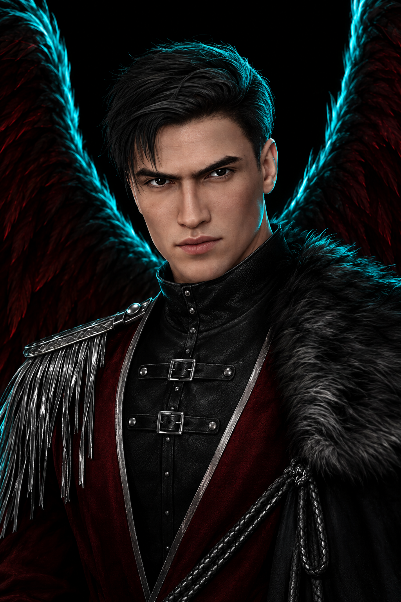
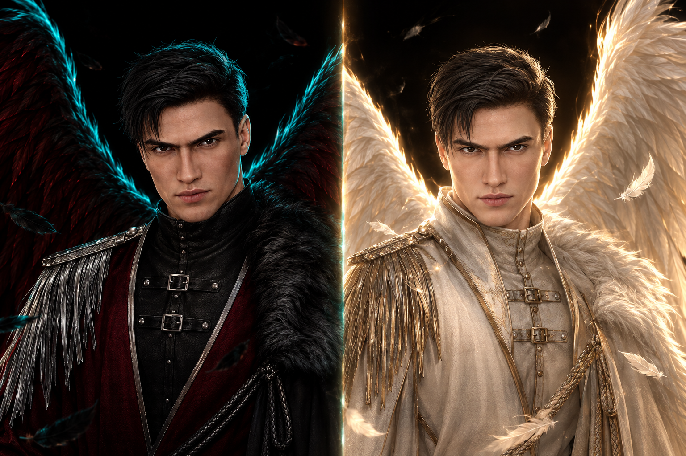
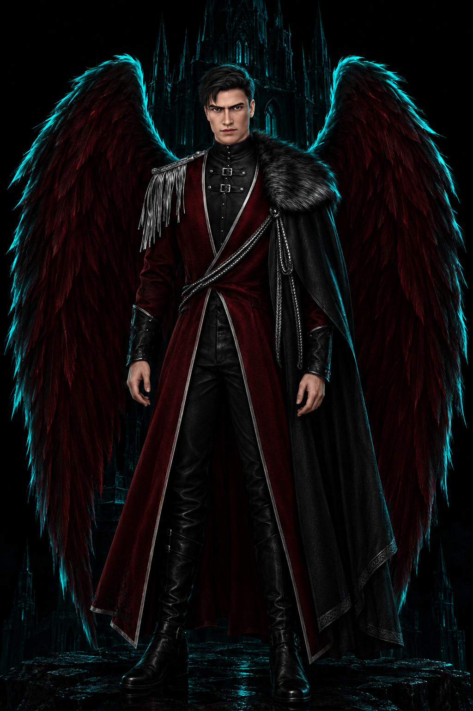
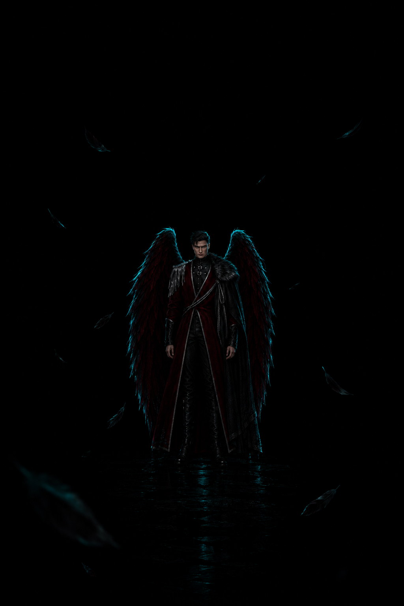
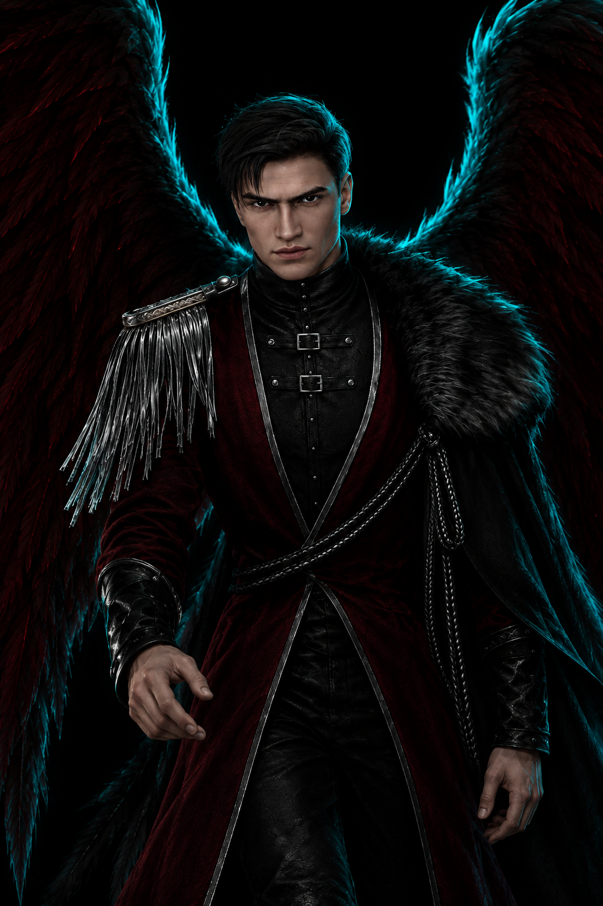
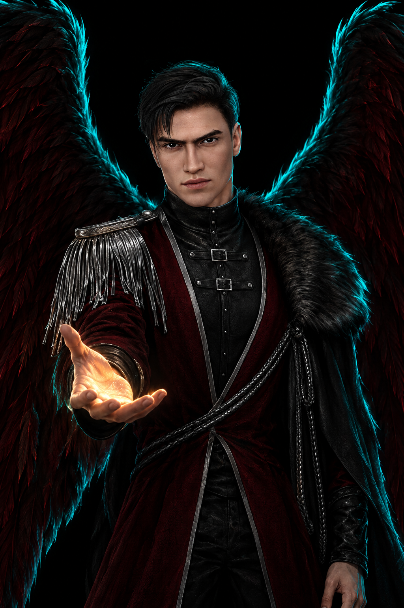

Сын ангела и демона — Первый из выживших — Свет и тьма в одном существе — Сын ангела и демона — Первый из выживших — Свет и тьма в одном существе —
Глава I
Первый из выживших
Он родился в союзе ангела и демона. До него все дети таких союзов умирали через несколько часов после рождения. Он выжил и стал первым.
С раннего детства в нём проявились необычайные способности. Он считал, что демонов несправедливо ставят ниже ангелов, и верил, что без войны между двумя мирами этого не исправить.

0сезона истории с его участием
0стороны одного существа
0выживший ребёнок ангела и демона
ИмяМальбонте
ПроисхождениеСын ангела и демона
ОсобенностьПервый из выживших
Светлая сторонаБонт, мальчик с башни
Роль в историиАнтагонист и возможный возлюбленный
ИграКлуб Романтики: Секрет Небес
Тьма разрушает, а не созидает.
Мальбонте, «Секрет Небес»
Глава II
Свет, отделённый от тьмы

Шепфа почувствовал исходящую от него угрозу и решил его уничтожить, но не смог убить его ангельскую сторону. Тогда светлую часть отделили от тёмной.
Так появился Бонт, «мальчик с башни». Он веками спал взаперти, а потом о нём узнали студенты. Позже обе половины снова соединили, и Мальбонте вернулся.
Бонт, мальчик с башни
Светлая, ангельская половина. Её не удалось убить, поэтому её заперли и оставили спать.
веками спал взаперти в башне
о нём узнали студенты, и тайна перестала быть тайной
в финале второго сезона воссоединяется с тёмной стороной
Мальбонте, тёмная сторона
Демоническая половина, амбиция и воля, которые не принимают существующий порядок.
считает, что демонов несправедливо ставят ниже ангелов
уверен, что без войны двух миров ничего не исправить
проводит ритуал, который соединяет две половины
Глава III
Несколько минут в год
Пока он был в заточении, он следил за судьбой родителей, которых отправили на землю.
Лишь на несколько минут в год ему удавалось прорваться сквозь бесконечную пелену тьмы и взглянуть на их жизнь. Так продолжалось до самой их смерти. Возможно, именно там, в одиночестве, и родилась его уверенность, что мир устроен неправильно.
несколько минут света525 600 минут в году
Хроника
Жизнь по порядку
Рождение
Ребёнок ангела и демона
Дети таких союзов не жили дольше нескольких часов. Он стал исключением.
Детство
Необычайные способности
Уже тогда он видел несправедливость в том, что демонов ставят ниже ангелов.
Угроза
Решение Шепфы
Шепфа почувствовал исходящую от него опасность и попытался его уничтожить. Ангельскую сторону убить не получилось.
Раскол
Свет отделён от тьмы
Светлую часть отделили от тёмной. Так появился Бонт.
Заточение
Башня и пелена тьмы
Несколько минут в год он видел жизнь родителей, пока они не умерли.
Сезон 1
Антагонист и возможный возлюбленный
Он входит в историю как главный противник и как один из возможных фаворитов героини.
Сезон 2
Бонт и ритуал
Появляется светлая сторона. В финале Мальбонте проводит ритуал, и две половины воссоединяются.
Сезон 3
Война и выбор
Финал зависит от решений игрока: от союза с Мальбонте до его гибели.
Глава IV
Путь через «Секрет Небес»
Сезон 1
Мальбонте появляется как главный антагонист и вместе с тем как один из возможных фаворитов героини.
Сезон 2
На сцену выходит Бонт, светлая сторона. В финале сезона Мальбонте проводит ритуал, и две его половины воссоединяются.
Сезон 3
Война, выбор стороны и финал, который зависит от решений игрока: от союза с Мальбонте до его гибели.
За таких, как я, молиться нельзя — Тьма разрушает, а не созидает — Боль, ошибки и разочарование учат лучше всего — За таких, как я, молиться нельзя — Тьма разрушает, а не созидает — Боль, ошибки и разочарование учат лучше всего —
Глава V
Характер
Амбиция
Он не принимает мир таким, какой он есть. Для него порядок, в котором демонов ставят ниже ангелов, — ошибка, которую надо исправить, даже если цена высока.
Двойственность
В нём живут две стороны, и он первым задаёт героине неудобный вопрос: осталась бы она собой, если бы из неё убрали всё дурное?
Безжалостность
Он не просит жалости и сам никого не жалеет. На пути к цели он готов не щадить никого, и лишь героиня стоит для него особняком.
Одиночество
Башня, заточение, родители, на которых можно было смотреть лишь несколько минут в год. Его резкость выросла из этой пустоты.
Убеждённость
Он уверен, что боль, ошибки и разочарование учат лучше всего остального, и строит на этом свои решения.
Глава VI
Образ
Тёмно-бордовый камзол с серебряной окантовкой, чёрный мех на плече, плетёный кожаный шнур. За спиной крылья цвета запёкшейся крови с бирюзовым свечением по краю.
чёрные волосытёмные бровибордо и серебробирюзовое свечение

Мысли Мальбонте
Его слова из игры, пересказанные своими словами
Боль, ошибки и разочарование учат лучше всего.
Бонт не был отдельным человеком, поэтому его не вернуть: он никуда не уходил.
Он говорит о себе: за таких, как я, молиться нельзя.
Тьма разрушает, а не созидает.
Испытание
Свет или тьма?
Три вопроса для интереса: к какой половине Мальбонте ты ближе.
Из тени к свету
Три кадра одного движения: он выходит из темноты, делает шаг и протягивает руку.

Из тени

Шаг вперёд

Протянутая рука
Протянутая рука
В нём слишком много и тьмы, и света. Он не просит жалости и сам никого не жалеет, но иногда протягивает руку, и это решает всё.
Финал
Развязки
Чем закончится история, зависит от выбора игрока и от близости с Мальбонте. Внимание: дальше спойлеры.
I
Путь ангела
При высокой связи Мальбонте и Шепфа договариваются, а героиня становится ангелом и советником Цитадели.
II
Путь демона
Мальбонте заточает Шепфу, и героиня становится демоном и советником Цитадели.
III
Путь Мальбонте
Он заточает Шепфу, а героиня становится Несущей Равновесие.
IV
Низкая связь
Мальбонте погибает, и героиня, выбрав сторону, становится советником Цитадели.